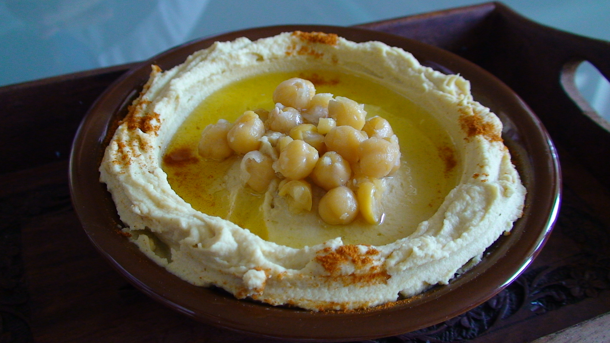

Hummus
Home

The ingredients
- 1 (15 ounce) can chickpeas, drained, liquid reserved
- 1 tablespoon lemon juice
- 1 tablespoon olive oil
- 1 clove garlic, crushed
- ½ teaspoon ground cumin
- ½ teaspoon salt
- 2 drops sesame oil, or to taste (Optional)
Steps
- Gather all ingredients.
- Blend chickpeas, lemon juice, olive
oil, garlic, cumin, salt, and sesame
oil in a food processor.
- Stream reserved chickpea liquid into
the mixture as it blends until desired
consistency is achieved.
- Serve with pita chips or veggies.
- Enjoy!